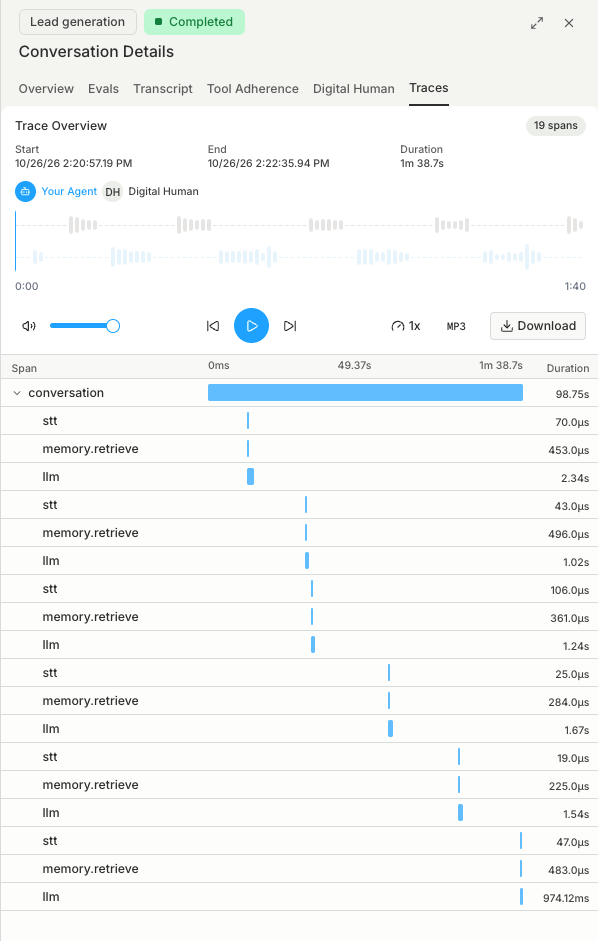

Trace your voice agent with Bluejay
Bluejay tests your voice agent by having simulated customers talk to it. A transcript shows what your agent said, not what it did. Send your app's OpenTelemetry trace, tool calls and a short call summary with each test call, and your tests can check if the agent and application actually do what they should.
Before you start
The examples in this guide come from a medical scheduling agent, a FastAPI app that serves ConversationRelay's TwiML at /incoming-call, handles the WebSocket at /ws, streams replies from OpenAI, and runs nine tools such as lookup_patient and schedule_appointment. All of its Bluejay code is in one file, src/bluejay.py.
opentelemetry-sdk
opentelemetry-exporter-otlp-proto-http
opentelemetry-instrumentation-openaiBLUEJAY_API_KEY=your-bluejay-api-keySend traces to Bluejay
Bluejay receives spans over OTLP/HTTP at https://otlp.getbluejay.ai/v1/traces, with your API key in the X-API-KEY header. setup() installs a tracer provider that exports there, then turns on the OpenAI instrumentation:
BLUEJAY_TRACES_URL = "https://otlp.getbluejay.ai/v1/traces"
def setup() -> None:
"""Send OpenTelemetry traces to Bluejay."""
api_key = config.bluejay_api_key
provider = TracerProvider(resource=Resource.create({SERVICE_NAME: "conv-relay-scheduling"}))
# Batches on a background thread, so calls never block on Bluejay.
provider.add_span_processor(
BatchSpanProcessor(
OTLPSpanExporter(endpoint=BLUEJAY_TRACES_URL, headers={"X-API-KEY": api_key})
)
)
trace.set_tracer_provider(provider)
OpenAIInstrumentor().instrument(tracer_provider=provider)
logger.info("Bluejay tracing enabled")BatchSpanProcessorexports spans in the background. ASimpleSpanProcessorwould export each span as soon as it ends, on the thread that ended it.OpenAIInstrumentorwraps the OpenAI SDK, so everychat.completions.createcall becomes anopenai.chatspan carrying the model, messages, tool calls and token counts. For a streamed reply, the span ends when the stream has been read to the end.
Call setup() once at startup, and mount bluejay.router so the trigger route from section 04 is served. The sample does both in main.py.
Restart the app. The startup log should show Bluejay tracing enabled.
Give each call one trace
Create one span that covers the whole call. Open it around the loop that serves the ConversationRelay WebSocket, and make it current:
from opentelemetry import trace
from src import bluejay
...
tracer = trace.get_tracer(__name__)
async def handle_relay_websocket(ws: WebSocket) -> None:
...
if params.get("session_id") and params.get("role"):
await _run_bridge_loop(ws, sender, setup)
else:
with tracer.start_as_current_span("call", attributes={"call.sid": setup.callSid}) as call_span:
await _run_agent_loop(ws, sender, setup)
await bluejay.link_simulation(call_span, setup.callSid)- The span starts when ConversationRelay's
setupmessage arrives and ends when the WebSocket closes, after a hangup or a handoff. - Every span created during the call lands under it.
- The last line links the call to its result once the span has ended (section 05).
What one call looks like

Add spans for the rest of your app
Add a span to any step you want to see, such as a tool, a database lookup or a guardrail check, with the plain OpenTelemetry API. Anything you open while a call is in progress nests under call:
from opentelemetry import trace
tracer = trace.get_tracer(__name__)
with tracer.start_as_current_span("tool.schedule_appointment") as span:
result = await tool_registry.run(tc.name, tc.arguments, state)
span.set_attribute("tool.success", result.success)To add something to the span that's already open, without starting a new one, use trace.get_current_span().set_attribute(...) or .add_event(...).
Trigger the test call
Add a route to your app, and enter its URL as your Bluejay agent's Outbound Trigger Webhook URL. Bluejay POSTs to it at the start of each test conversation, and your app calls the Digital Human's phone number.
What Bluejay sends
| Part | Value |
|---|---|
phone_number | The Digital Human's number, in E.164 |
sim_conversation_id | The ID of this conversation in the simulation |
X-Bluejay-Idempotency-Key | The conversation ID. Bluejay's docs say to use it to ignore a repeated request. |
X-Bluejay-Signature | An HMAC-SHA256 of the raw body, signed with the agent's Webhook Signing Key. The sample route doesn't check it. Verify it before running the route outside a test, or anyone with the URL can make your app place calls. |
Your app must return a 2xx within 15 seconds. After 3 failed tries, Bluejay ends the conversation with OUTBOUND_TRIGGER_FAILED.
The trigger route
Your app places the call, so it has the Call SID before the call connects. The route stores the simulation result ID under that Call SID, and section 05 looks it up when the call ends.
router = APIRouter()
_triggers: dict[str, str] = {}
_simulations: dict[str, tuple[str, str]] = {}
@router.post("/bluejay/trigger-call")
async def trigger_call(request: Request) -> dict:
"""Bluejay's outbound trigger: call the Digital Human and remember which result the call belongs to."""
data = await request.json()
phone_number = data.get("phone_number")
result_id = str(data.get("sim_conversation_id") or "")
if not phone_number or not result_id:
raise HTTPException(status_code=400, detail="phone_number and sim_conversation_id are required")
trigger_key = request.headers.get("X-Bluejay-Idempotency-Key") or result_id
if trigger_key in _triggers:
return {"status": "ok", "call_sid": _triggers[trigger_key]}
client = Client(config.twilio_account_sid, config.twilio_auth_token)
call = await asyncio.to_thread(
client.calls.create, to=phone_number, from_=config.twilio_phone_number, url=config.http_url + "/incoming-call"
)
_triggers[trigger_key] = call.sid
_simulations[call.sid] = (result_id, trigger_key)
logger.info("Bluejay test call placed to=%s callSid=%s result_id=%s", phone_number, call.sid, result_id)
return {"status": "ok", "call_sid": call.sid}Attach the call to its result
Linking a call to its result takes three steps:
- While the call runs, record its tool calls (and any events and metadata).
- After the call ends, call
force_flush()on the tracer provider. - Send everything to
POST https://api.getbluejay.ai/v1/update-simulation-result, with your API key in theX-API-Keyheader.
Record tool calls and metadata
bluejay.py keeps what each call records in memory, keyed by Call SID, until the call is linked.
_recorded: dict[str, dict] = {}
def _record(call_sid: str) -> dict:
return _recorded.setdefault(call_sid, {"tool_calls": [], "metadata": {}})
def record_tool(call_sid: str, name: str, parameters: dict, output: Any) -> None:
"""Record a tool call for Bluejay's Tool Call metric."""
if config.bluejay_api_key:
_record(call_sid)["tool_calls"].append(
{"name": name, "parameters": parameters, "output": output, "time_ns": time.time_ns()}
)
def set_metadata(call_sid: str, metadata: dict) -> None:
"""Set call-level values; each key fills a {{variable}} in Bluejay metric prompts."""
if config.bluejay_api_key:
_record(call_sid)["metadata"].update(metadata)Call record_tool right after each tool runs, and set_metadata when the call ends. The sample does this after tool_registry.run in conversation_graph.py, and in the WebSocket loop's finally block in websocket_receiver.py.
Send it when the call ends
link_simulation runs once per call, after the call span ends. It builds one request from the trace ID, the result ID the trigger route stored, and whatever was recorded:
BLUEJAY_LINK_URL = "https://api.getbluejay.ai/v1/update-simulation-result"
async def link_simulation(call_span, call_sid: str) -> None:
"""Send a finished call's trace, tool calls and metadata to its Bluejay simulation result."""
if not config.bluejay_api_key:
return
recorded = _recorded.pop(call_sid, {"tool_calls": [], "metadata": {}})
simulation = _simulations.pop(call_sid, None)
body: dict[str, Any] = {"trace_ids": [format(call_span.get_span_context().trace_id, "032x")]}
if simulation is not None: # placed by trigger_call, so the result ID is known
result_id, trigger_key = simulation
_triggers.pop(trigger_key, None)
body["simulation_result_id"] = result_id
else: # let Bluejay match the call by time
start, end = call_span.start_time / 1e9, call_span.end_time / 1e9 # SDK spans record ns
body["start_time"] = datetime.fromtimestamp(start, timezone.utc).isoformat()
body["end_time"] = datetime.fromtimestamp(end, timezone.utc).isoformat()
body["duration"] = end - start
if recorded["tool_calls"]:
body["tool_calls"] = [
{
"name": tc["name"],
"parameters": tc["parameters"],
"output": tc["output"],
"start_offset_ms": max(0, (tc["time_ns"] - call_span.start_time) // 1_000_000),
}
for tc in recorded["tool_calls"]
]
if recorded["metadata"]:
body["metadata"] = recorded["metadata"]
# Spans are batched; push them out before Bluejay looks the trace up.
await asyncio.to_thread(trace.get_tracer_provider().force_flush)
try:
async with httpx.AsyncClient(timeout=10) as client:
resp = await client.post(
BLUEJAY_LINK_URL,
content=json.dumps(body, default=str), # tool outputs may not be plain JSON
headers={"X-API-Key": config.bluejay_api_key, "Content-Type": "application/json"},
)
except httpx.HTTPError:
logger.exception("Bluejay link request failed")
return
if resp.is_error:
logger.warning("Bluejay link failed status=%s body=%s", resp.status_code, resp.text)
else:
logger.info(
"Bluejay trace linked trace_id=%s result_id=%s tool_calls=%d",
body["trace_ids"][0],
body.get("simulation_result_id", "matched by time"),
len(body.get("tool_calls", [])),
)Run a test
Outbound Trigger Webhook URL: https://<your-domain>/bluejay/trigger-callBluejay tracing enabled in the startup log.Bluejay test call placed to=… callSid=… result_id=… as it dials the Digital Human.